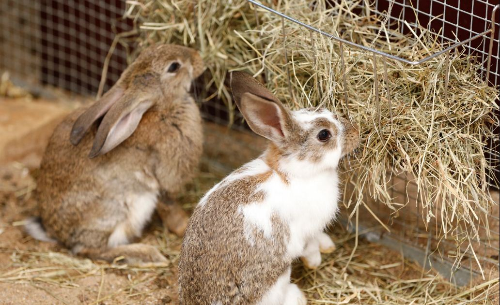

خیلیها فکر میکنن غذای خرگوش فقط هویجه! اما اگه قراره از یه خرگوش ناز و بامزه نگهداری کنید باید بدونید که هویج غذای اصلی خرگوش نیست و این حیوون علاوه بر هویج به مواد غذایی دیگهای هم نیاز داره تا همیشه سالم و سرحال باشه. در این مطلب قراره در مورد لیست غذای خرگوش بالغ و بچه خرگوش و نکات تغذیهای مهم صحبت کنیم و بهترین محصولات موجود در بازار رو به شما معرفی کنیم. همینطور براتون میگیم که شیر و آب رو چطوری باید در دسترس خرگوش قرار بدین. خیالت راحت، ما این راهو بلدیم، فقط کافیه در ادامه این مطلب با ما همراه باشی.
نگهداری از خرگوش به عنوان حیوان خانگی
اگه بگیم خرگوشها بامزهترین و نازترین حیوان خانگی هستن اغراق نکردیم! این حیوونای نرم و پشمالو جزء حیوانات خانگی بیدردسر هستن و مثل خوکچه هندی نگهداریشون کار چندان سختی نیست.
خرگوشها انواع مختلفی دارن و برخی از اونا مثل خرگوش لوپ بیشتر به عنوان پت و حیوان خانگی نگهداری میشه. برای اینکه در مورد انواع خرگوش، ویژگیهایی اونا و نحوه نگهداریشون بیشتر بدونید مقاله نگهداری از خرگوش خانگی رو بخونید.
خرگوشها موجوداتی ساکت و آروم هستن و شاید خیلی از صاحبان خرگوش به فکر تربیتش هم نباشن. اما این حیوونای بامزه و ناز تربیت پذیر هم هستن و میتونید مثلا اسمش رو بهش یاد بدید یا طوری تربیتش کنید که وقتی صداش میکنید پیشتون بیاد. در مقاله تربیت خرگوش در این مورد بیشتر صحبت کردیم و پیشنهاد میکنیم حتما مطالعهش کنید.
مهمترین نکته در نگهداری از خرگوش خانگی توجه به تغذیه و رژیم غذاییشه. برخلاف چیزی که خیلی از ما فکر میکنیم غذای خرگوش فقط هویج و کاهو نیست و باید غذاهای خیلی متنوعی بخوره! پس اگه نمیدونین خرگوش چی میخوره با ما تا انتهای این مطلب همراه باشین.

غذای خرگوش چیست؟
خرگوشها هم درست مثل ما از غذای خوب و متنوع لذت میبرن تا هم تمام مواد غذایی لازم رو دریافت کنن هم حوصلهشون از غذای تکراری سر نره.
توجه به برنامه غذایی خرگوش از بسیاری از بیماریهای رایج در خرگوشها مثل رشد بیرویه دندان، چاقی و اضافه وزن، نفخ، ریزش مو و مشکلات گوارشی جلوگیری میکنه. در مورد انواع بیماری و مشکلات سلامتی توی این حیوون اگه نیاز به اطلاعات بیشتری دارین، حتما مطلب بیماری خرگوش رو کامل بخونین!
اما به طور کلی ۸۰ درصد میزان غذای خرگوش در روز باید شامل علوفه و یونجه خشک باشه. بقیه رژیمش میتونه ترکیبی از میوهها، سبزیجات تازه و پلت (غذای مخصوص خرگوش) باشه.
دندان خرگوش دائما در حال رشده و جویدن یونجه خشک و سفت به کوتاه نگهداشتن اونا کمک میکنه. همینطور خرگوشها خیلی گوارش حساسی دارن و باید غذاهای باکیفیت و مخصوص خرگوش بهشون داده بشه.

تشویقی؛ جایزههای کوچک و خوشمزه برای خرگوشها!
حالا که قراره راجع به غدای خرگوش صحبت کنبم اجازه بدید از بهترین گزینه یعنی تشویقی شروع کنیم و بعد برسیم به معرفی غذاهای اصلی.
خرگوشها هم مثل خیلی از ما آدما از چیزای شیرین خوششون میاد. تشویقی و تریت مثل هله هوله باید تنها بخش کوچکی از رژیم غذایی خرگوش باشه و هرازگاهی بهش بدید.
خوراکیهای تشویقی مناسب برای خرگوش میتونه چند تکه میوه (تازه یا خشک شده)، ترکیبی از علوفه با سبزیجات و تشویقیهای مخصوص خرگوش باشه که در پتشاپها وجود داره.
تشویقی ها رو میتونید برای آموزش و تربیت خرگوش استفاده کنید.
دوست داری خرگوشت رو تربیت کنی؟
تربیت خرگوش ها کاری لذت بخش و جالبه ولی هرکسی بلد نیست اون ها رو درست آموزش بده.
اون ها میتونن شیرین کاری هایی مثل پریدن از روی مانع، دست دادن، غلت زدن، رفتن توی قفس، دستشویی کردن در جای مشخص و کلی چیزهای دیگه رو یاد بگیرین به شرطی که درست آموزششون بدید، زبونشون رو بلد باشید و کاری کنید که بهتون اعتماد کنن.
اگر دوست دارید خرگوشتون رو آموزش بدید، ایبوک تربیت و دستی کردن خرگوش رو دانلود و مطالعه کنید.
این ایبوک آموزش و تربیت خرگوش ها نوشته شده. بخونش، به کارهاش عمل کن و ببین خرگوشت چه جوری با هوشش و مهارت های که یاد میگیره، شگفت زده ات میکنه🤩 کلی هم بازی در این کتاب یاد دادیم که با انجامشون از وقت گذرونی با خرگوشت کلی لذت میبری.
علوفه و یونجه؛ اصلیترین بخش رژیم غذایی خرگوش
خرگوشها بیشتر از هرچیزی به علوفه نیاز دارن و این ماده غذایی چیزی نزدیک به ۸۰-۹۰% رژیم غذاییش باید باشه. علوفه حاوی فیبره که برای سلامتی خرگوشتون ضروریه. خرگوشها جزء جوندگان هستن و باید همیشه علوفه خشک برای جویدن در اختیارشون باشه تا هم مواد غذایی لازم به بدنشون برسه و هم جویدن از رشد بیش از حد دندوناون جلوگیری کنه. یونجه برای خرگوش خیلی مهمه و جزو جدایی ناپذیر رژیم غذاییشون به حساب میاد.
بهترین و مرغوبترین نوع علوفه برای خرگوش بالغ علوفه تیموتی هست که میتونید اونو از پتشاپها خریداری کنید.
البته برخی علوفههای ترکیبی هم در بازار وجود داره که از چند نوع علوفه مفید و یونجه تشکیل شده.
یه ماده غذایی دیگه برای خرگوشها علوفه آلفالفا(یونجه) نام داره که البته علف و سبزیجات نیست و یه نوع بقولات و بنشن محسوب میشه. آلفالفا بیشتر برای بچه خرگوش باید استفاده بشه و نباید زیاد به عنوان غذای خرگوش بالغ استفاده بشه. چون میزان زیادی کلسیم داره و در خرگوش های بالغ باعث انسداد دستگاه گوارش میشه.

علوفه تیموتی گرین فیل
- وزن: ۵۰۰ گرم
- یونجه تیموتی خشک غنی از پروتئین بالا به همراه گل پنیرک
- مناسب برای همه نژادهای خرگوش و جوندگان کوچک

یونجه خوراک و بستر حیوانات پی سی ال
- وزن: ۱ کیلوگرم
- این یونجه هم به عنوان بستر و جای خواب و هم به عنوان خوراکی قابل استفاده است.
- یونجه پی سی ال از نوع یونجه آلفا ۱۰۰% طبیعیه.
- به گفته کاربران، یونجهها تازه و باکیفیت هستن و خرگوشها اونو خیلی دوست دارن.

سبزیجات و گیاهان؛ غذای مورد علاقه خرگوش ها!
همه خرگوشها عاشق سبزیجات مختلف هستن. اکثر سبزیجات سبز رنگ در بازار برای خرگوشها بی خطر هستن.
خرگوشها عاشق کاهو، کلم چینی (بوک چوی)، برگ هویج، کلم قمری، گشنیز، ریحون، آب تره (شاهی آبی)، برگ چغندر و برگ و بوته خردل هستن.
البته بیشتر از دو فنجان سبزیجات در روز به خرگوشتون نباید بدید. نژادهای خرگوش کوتوله که زیر ۲ کیلو وزن دارن یک فنجان سبزیجات در روز براشون کافیه. بهترین رژیم ترکیب و تنوعی از چند سبزیجات مختلفه.
از دادن سیب زمینی، ذرت، لوبیاجات، دانهها و مغزیجات به خرگوشتون خودداری کنید. هضم این غذاها برای خرگوشتون مشکله و باعث ناراحتیهای گوارشی میشه.
سبزیجات مفید و بیخطر برای خرگوش
برگ هویج، کرفس (باید به قطعات کوچک خرد بشه)، کلم بروکسلی، شوید، فلفل دلمهای، کاهو، گندم سبز شده، خیار، کدو سبز، برگ تربچه، ریحان، برگ گشنیز، شوید، نعنا، جعفری
سبزیجات و گیاهانی که تنها ۱-۲ بار در هفته میتونید به خرگوش بدید شامل: بروکلی، هویج، شبدر، بابونه، اسفناج، کلم پیچ میشه.
به خرگوشتون اسفناج و کلم ندید! این سبزیجات به خاطر مقادیر زیاد اوگزالات و گواتروژن در دراز مدت باعث بروز مشکلات سلامتی برای خرگوش میشن.
میوهها؛ با احتیاط مصرف شود!
خیلی از میوهها رو میتونید به خرگوشتون بدید اما تاکید میکنیم که تنها ۲-۳ بار در هفته اجازه دارید به خرگوشتون تکههای کوچک میوه بدید؛ چون قند طبیعی میوهها میتونه باعث چاقی و پوسیدگی دندونای خرگوش بشه.
حواستون باشه که میوههایی مثل موز و انگور قند خیلی زیادی دارن و تکههای خیلی کوچک و مثلا ۲-۳ بار در ماه اونم به عنوان تشویقی و تریت بهش بدید، نه بیشتر!
میوههای مفید و بیضرر برای خرگوشها:
سیب (بدون هسته و چوب)، موز، انگور بدون هسته، پرتقال، گلابی، آناناس، انواع خانواده توت (توت فرنگی، بلوبری، کرنبری و …)، گیلاس (بدون هسته)، هلو، هندوانه، آلو
نکات مهم
از دادن میوهها و سبزیجات له شده و گندیده به خرگوش خودداری کنید. اگه میوه و سبزیجاتی به حدی خرابه که خودتون نمیخوردیش پس به خرگوشتون هم ندید.
حواستون باشه که نوع غذا و تغذیه خرگوش تاثیر مستقیمی روی رنگ ادرارش داره. مثلا، غذاهایی که ویتامین C دارن باعث قرمز شدن ادرار میشن.
ادرار نرمال و طبیعی خرگوش میتونه به رنگهای زرد، نارنجی، شفاف، سفید یا نارنجی پرتقالی باشه و جای نگرانی نیست. اما اگه واقعا فکر میکنید رنگ قرمز ادرارش طبیعی نیست و ممکنه نشونه وجود خون تو ادرار باشه به دامپزشک مراجعه کنید.

آب تازه و خنک: همیشه و به مقدار زیاد!
علاوه بر تمام مواد غذایی بالا، خرگوشها به آب نیاز دارن تا دچار کم آبی نشن. همیشه آب تازه و خنک در دسترس خرگوش قرار بدید و هرروز آب رو عوض کنید. ظرف آب رو هم هرچند روز یکبار با آب و صابون خوب بشورید.
بطریهای آبخوری خیلی برای خرگوش مناسب نیستن، چون هم خرگوش خیلی راحت نمیتونه ازشون آب بخوره هم تمیز کردنش کار سادهای نیست. بهترین گزینه برای ظرف آب خرگوش یه ظرف گود از جنس سرامیکه؛ چون راحت تمیز میشه و خرگوش هم نمیتونه اونو برگردونه و بریزه.
غذاهای مضر برای خرگوشها:
- هله هولههای ما آدما (پفک، چیپس و …)
- حبوبات
- کلم برگ
- گل کلم
- غلات
- شکلات
- ذرت یا غذاهایی که با ذرت درست شده
- مغزیجات
- پاستا
- نخود فرنگی
- سیب زمینی
- قند و شکر
- ماست
پِلت؛ غذای خشک مخصوص خرگوشها
اگه نمیدونین که پلت خرگوش چیه باید بگم که: پلت یجور غذای خشک مخصوص خرگوشه که ترکیبات مختلفی میتونه داشته باشه؛ اما باید شامل یونجه، مواد معدنی، ویتامینهای مفید برای خرگوش باشه. پلتهای تهیه شده از علوفه تیموتی رو میتونید در حجم کم به خرگوشتون بدید.
یه خرگوش بالغ با وزن متوسط روزانه یک چهارم فنجان پلت میتونه بخوره. اگه وزن خرگوشتون بیشتر از ۴ کیلو هست بیش از یک چهارم فنجان بهش پلت ندید؛ چون باعث چاقی و اضافه وزنش میشه.
بچه خرگوشهای زیر یک سال نیازهای تغذیهای بیشتری دارن و باید پلتهای تهیه شده از علوفه آلفالفا (یونجه) بخورن.
از خرید پلتهایی که حاوی ذرت خشک شده، مغزیجات و دانهها هستن خودداری کنید، چون این مواد غذایی حتی میتونن برای سلامتیِ خرگوشتون مضر و خطرناک باشن.
خوشبختانه محصولات متعددی در بازار وجود دارن که کیفیت خوب و قابل قبولی هم دارن. این غذاها به صورت غذای خشک پلت شده یا غذای ترکیبی وجود دارن و در بستهبندیها و قیمتهای مخلتفی عرضه میشن. در ادامه برخی از غذاهای مخصوص خرگوش رو بهتون معرفی میکنیم:

غذای خرگوش تاپ فید مدل Daily Pellet
- وزن: ۱ کیلوگرم
- غذای خشک خرگوش به صورت پلت برای انواع نژادهای خرگوش مینیاتوری، لوپ و …
- غذای کامل و مورد علاقه خرگوشها
- کمک به حفظ سلامت دندانها
- تامین کننده نیازهای تغذیهای خرگوش

غذای خرگوش پادوان
- محصول: ایتالیا
- وزن: ۵۰۰ گرم
- بهترین غذا برای نژادهای خرگوش مثل لوپ و مینیاتوری
- سرشار از ویتامینها، فیبر، اسیدهای آمینه و چرب
- بدون مواد نگهدارنده

غذای خرگوش یادگار مدل Pelleted
- وزن: ۱ کیلوگرم
- خوراک خرگوش پلت شده مخصوص انواع نژادهای خرگوش
- خوراک کامل حاوی ریزمغذیهای مورد نیاز خرگوش
- این غذا برای سایر جوندگان مثل همستر، خوکچه هندی و … هم مناسبه.
- سفتی پلتها به کوتاه نگهداشتن و سلامت دندانها کمک میکنه.
- دارای ترکیبات پروبیوتیکی
- حاوی ترکیبات ضدانگلی

غذای کامل خرگوش نیچر پلن
- وزن: ۸۰۰ گرم
- غذای مخصوص انواع نژادهای خرگوش مثل لوپ هلندی، کوتوله هلندی، مینی ساتین، مینی لوپ و …
- یک غذای کامل ترکیبی از غلات و گیاهان، ویتامینها، تکههای هویج طبیعی، آویشن، پروبیوتیک
- شامل یونجه، سویا، ذرت، گندم، سورگوم، جو، آفتابگردان، خرنوب، جو دوسر، ماش، بادام زمینی، هویج و جلبک دریایی
- کمک به سلامت و درخشندگی موهای خرگوش
- مقدار مصرف روزانه ۴۰-۵۰ گرم کافی است.

غذای خشک پلت یونجه همستر شاپ
- وزن: ۱ کیلوگرم
- غذای مکمل خرگوش به صورت یونجه پلت شده
- برای انواع نژادهای خرگوش
- کمک به کوتاه نگهداشتن دندانهای خرگوش
- دارای مواد معدنی و آهن
- خرگوش در کنار یونجه خشک (پلت یونجه) به غذای خشک مخصوص هم نیاز دارد.

غذای خرگوش گرین فیل
- وزن: ۲ کیلوگرم
- ترکیبات: گندم، جو، سبوس گندم، سویا، جو پرک، بهلیمو، سیب، هویج، خیار، نخود، بیسکوییت
- غذای مخصوص خرگوش غنی سرشار از پروتئین و فیبر خام
- کمک به تقویت سیستم ایمنی بدن
- سرشار از ویتامین و مواد معدنی

غذای بچه خرگوش چیست؟
شش ماه اول زندگی خرگوشها تعیین میکنه که تو ادامه زندگیشون تا آخر عمر سالم هستن یا نه. خرگوش تو این مرحله کلیدی و حساس زندگیش دائم در حال رشده، و در نتیجه رژیم غذاییش هم باید متناسب با این رشد سریعش باشه. تغذیه کافی و مناسب بچه خرگوشها باعث میشه که تو دوره بزرگسالی استخونها و عضلات سالمی داشته باشن.
شاید ندونین اما تغذیه درست میتونه به کوتاه شدن طبیعی دندونهای خرگوش هم کمک کنه. به خصوص در بچه خرگوش ها که دندونهاشون دائما در حال بلند شدنه و باید با خوردن علوفه و فیبر زیاد بطور طبیعی دندون ها کوتاه بشه. در غیر این صورت دندونها خیلی بلند میشن و ممکنه آبسه ایجاد بشه یا ریشه دندون به فک آسیب بزنه.
توی مطلب غذای بچه خرگوش نکات مرتبط به تغذیه اونو به طور کامل و مفصل توضیح دادیم و اگه خرگوش نوزاد دارین، پیشنهاد میکنیم، حتما به اون مقاله هم یه سری بزنین.
خرگوش تا چند ماهگی شیر میخوره؟
غذای خرگوش تازه متولد شده هم مثل همه پستانداران دیگه فقط شیر مادره. احتمالا الان این سوال براتون پیش اومده که خرگوش تا چند ماهگی شیر میخوره؟ جواب اینه که تا سن ۱.۵ الی ۲ ماهگی شیر میخوره، ولی از ۲ تا ۳ هفتگی خوردن غذاهای جامد رو هم شروع میکنه که معمولا اولش شامل علفهای خشک اطراف لونه است، و از سه چهار هفتگی به بعد در کنار شیر، از همون غذاهای مادرش تغذیه میکنه.
به عبارتی میشه گفت که توی طبیعت، غذای خرگوش یک ماهه به بالا مثل غذای خرگوشهای بالغه و فقط تا ۲ ماهگی شیر مادر هم در کنارش هست. بچه خرگوشها تا سن ۸-۶ هفتگی یعنی زمانی که از شیر گرفته میشن، کم کم دستگاه گوارششون تغییر میکنه تا به جای شیر، غذای جامد رو هضم کنه. این دوره خیلی حساسه و به همین خاطره که خرگوشها باید حداقل ۸ هفته اول رو کنار مادرشون زندگی کنن. در کنار شیر، علف خشک و آب مهمترین بخش تغذیه بچه خرگوش تشکیل میده.
تغذیه خرگوشهای باردار و شیرده
تغذیه مناسب همیشه برای خرگوشها لازمه، ولی برای خرگوشهای باردار خیلی مهمتره چون هر دفعه ممکنه تا ۱۲ بچه به دنیا بیارن و علاوه بر خودشون، باید احتیاجات همه این بچهها رو هم تامین کنن.
غذای خرگوش حامله چی باید باشه؟
هر روز به خرگوش باردارتون هر چقدر که میخواد علف خشک و سبزیجات تازه بدین، مخصوصا یونجه باکیفیت (تا ۸۰ درصد یونجه)، ولی مقدار پلت رو باید بر اساس وزنش تنظیم کنین تا چاق نشه. یک قانون کلی و تقریبی که میتونین تو خونه ازش استفاده کنین اینه که به ازای هر ۲ تا ۳ کیلو وزن بدن خرگوش، یک چهارم تا یک هشتم فنجون (۱۶ تا ۳۲ گرم) پلت بهش بدین.
فقط خیلی مراقب باشین که خرگوش باردار بیش از حد غذا نخوره چون اضافه وزن میتونه عوارض و مشکلات دوره بارداری و زایمان رو بیشتر کنه.
اگه در مورد تولید مثل، بارداری، زایمان و عقیم سازی خرگوش دوست دارین نکات بیشتری رو بدونین، حتما یه سری به مقاله زایمان خرگوش بزنین!
تغذیه در دوران شیردهی
تو دوره شیردهی هم بدن خرگوش مادر به مواد مغذی زیادی احتیاج داره چون هر روز باید حدود ۳۰ گرم پروتئین بسازه و با شیرش به بچهها بده، و برای ساختن این مقدار پروتئین باید هر روز ۵ تا ۷۰ گرم پروتئین از غذاهایی که میخوره دریافت کنه.
هرچی سن بچهها بالاتر میره مقدار غذایی که خرگوش مادر لازم داره هم بیشتر میشه. میزان غذایی که خرگوش شیرده لازم داره به این صورته:
- از روز اول تا دهم: روزی ۳۳۰ گرم
- روز یازدهم تا بیستم: روزی ۴۴۰ گرم
- روز بیست و یکم تا سیام: ۵۶۰ گرم
- از روز سی و یکم تا زمان از شیر گرفتن بچهها: هر روز ۷۰۰ گرم
بعضی از غذاهای مناسب برای دوره شیردهی خرگوش ایناست:
- تو فصل تابستون: یونجه، شبدر و علفهای مختلف
- تو زمستون: بوته خشک شده حبوبات و سیلاژ (گیاهای نگهداری شده تو حالت سیلو)
مواد معدنی کافی هم باید تو غذای خرگوش مادر وجود داشته باشه و کمبودشون میتونه کیفیت و مقدار شیردهی رو پایین بیاره. بعضی خوراکیها مثل جعفری و جوانه شِوید، بدن حیوون رو تحریک میکنن تا شیر بیشتری تولید کنه و بهتره هر روز یک مقدار ازشون به خرگوش بدین.
حتما باید به خرگوش مولتی ویتامین بدیم؟
نه، لازم نیست که مولتی ویتامین جزو همیشگی رژیم غذایی خرگوش باشه چون مواد معدنیشون بالاست و مناسب خرگوشی که غذای اصلیش یونجهس نیست و میتونه درصد سنگ ادرار رو توشون بالا ببره.
مولتی ویتامین در این موارد میتونه به خرگوش داده بشه:
- خرگوش بیماره یا بیماری سختی رو پشت سر گذاشته
- جراحی سنگینی داشته
- طولانی مدت دچار انگل بوده
- فصل ریز موئه و خرگوش ریزش موی شدیدی داره
نکته مهم: مقدار و نحوه مصرف مولتی ویتامین هم حتما باید توسط دامپزشک تعیین بشه!
چطور غذای جدید به خرگوشم بدم؟
خرگوشها خیلی گوارش حساسی دارن و تغییر ناگهانی غذا ممکنه باعث مشکلات گوارشی مثل اسهال خرگوش و نفخ دردناک بشن.
اگه غذای جدیدی رو میخواهید به خرگوشتون بدید (مثلا جعفری) چند روز اول فقط یه ساقه کوچولو جعفری جلوی خرگوشتون بگیرید تا ببینید خرگوشتون دوستش داره یا نه. همچنین تو این مدت ادرار و مدفوع خرگوشتون رو تحت نظر بگیرید تا مطمئن بشید همه چی سالم و طبیعیه. اگه تغییر خاصی ندیدید و خرگوش هم طعم غذای جدید رو دوست داشت میتونید مقدار بیشتری از سبزی یا میوه رو بهش بدید.
عادت دادن خرگوش به پلت یا علوفه جدید
یونجه و پلت بخش عمده رژیم غذایی خرگوشتون رو تشکیل میدن، بنابراین باید به تدریج و کم کم غذای جدید رو بهش معرفی کنید. با مخلوط کردن پلت یا یونجه قدیمی یا جدید شروع کنید و به مرور مقدار غذای جدید رو بیشتر کنید تا اینکه در نهایت غذای کاملا جدید رو در اختیارش بذارید.
- هفته اول: ¼ غذای جدید + ¾ غذای قدیمی
- هفته دوم: نصف غذای جدید +نصف غذای قدیمی
- هفته سوم: ¾ غذای جدید + ¼ غذای قدیمی
- هفته چهارم: غذای کاملا جدید

آیا شیر برای خرگوش خوب است؟
شکی نیست که شیر مادر برای نوزاد پستانداران یک غذای کامله. شاید با خودتون بگین حتما دادن شیر به خرگوشم باعث میشه کلسیم و پروتئین و چیزای دیگهای که لازم داره تامین بشه. اما باید بدونین که خرگوشها نمیتونن لاکتوز (قند شیر) رو هضم کنن و علاوه بر این نمیتونن استفراغ کنن و چیزایی که میخورن رو بالا بیارن.
در نتیجه اگه به حیوون شیر بدین مشکل گوارشی پیدا میکنه و به احتمال زیاد زنده نمیمونه. اگه متوجه شدین خرگوشتون اسهال گرفته بلافاصله با دامپزشک آنلاین پت پرس مشورت کنین. متخصصان تغذیه پت پرس در این مواقع بهتون مشاوره میدن.
غذای خرگوش در زمستون
تو فصل زمستون هم مثل باقی روزهای سال پلت، سبزیجات و میوههای با کیفیت به خرگوشها بدین و مقدار غذا رو هم زیاد نکنین. مخصوصا لازمه که مقدار قند و کربوهیدراتهای غذا (که توی بیشتر سبزیجات و میوهها وجود داره) محدود بمونه و از حد لازم بیشتر نشه.
برای این که خرگوشتون تو زمستون گرم بمونه باید چربی بیشتری زیر پوستش جمع بشه. یک گیاه علوفهای به اسم دمگربهای چمنزاری یا لوئیچه چمنی یا علف تیموتی هست که اگه بوتههای خشک شدهشو به خرگوش بدیم به جمع شدن چربی تو بدنش کمک میکنه و برای زمستون گزینه خیلی خوبیه. میتونین هر چقدر که حیوون خواست از این گیاه بهش بدین.
ضمنا تو زمستون باید مراقب باشین آبی که برای خرگوشتون گذاشتین یخ نزنه یا اونقدر سرد نشه که حیوون نتونه بخوردش.
غذای مورد علاقه خرگوش شما چیه؟
توی این مقاله سعی کردیم به شما کمک کنیم تا شما هم مثل ما بدونین که به خرگوش چه غذایی بدهیم تا حالا تجربه نگهداری از خرگوش رو داشتید؟ خرگوش شما چه غذاهایی میخوره؟ آیا غذای خشکی که به خرگوشتون میدید تو این مقاله بهش اشاره شده بود؟ لطفا برای ما کامنت بگذارید و نظر، تجربیات و سوالات خودتون در مورد غذای خرگوش رو با ما در میون بگذارید. ما در اسرع وقت به سوالات شما پاسخ میدیم.


به خرگوشم طالبی دادم.خورد و هیچ مشکلی هم ندارم و چند روز از اون موقعی که بهش طالبی دادم هم میگذره الان مشکلی نیست؟؟
سلام نازنین عزیز
نه مشکلی نداره ولی بهتره که خیلی کم و گاهی اوقات بهش بدی چون باعث چاقی و پوسیدگی دندوناش میشه.
من سه روزه خرگوش مینی لوپ خریدم روز اول از دست خودم غذا میخوردن امه دو روزه کم اشتها شدن آبم نمیخورن بیشترم خوابن وقتی خرگوش نرم زوتوپیا میخواد بخوابه خرگوش مادم فندوق نمیخواد بخوابه وقتی فندق میخوابه زوتوپیا نمیخواد بخوابه باید چکار کنم
سلام نرگس عزیز
بی اشتهایی و نخوردن آب نشونه های خطرناکی هس و هرچه سریع تر باید با دامپزشک مشورت کنی.
با بخش دامپزشک آنلاین در ارتباط باش تا دامپزشکای پت پرس کامل راهنماییت کنن.
سلام، خرگوش من ۷سال و ۸ماهشه تقریبا از۲۰ روز پیش پای راستش رو کج میزاره زیر شکمش، دکتر گفت پاهایش مشکل نداره و مشکل از کمرش که با توجه به سنش نمی شه جراحی کرد، مشکل اینه که وقتی دستشویی میکنه قسمت داخل پای راستش خیلی میشه و حالا چند روزه که پوست این قسمت قرمز شده و موهایش داره میریزه، هر روز این قسمت رو می شورم و خشک میکنم اما خوب نمی شه ، آیا پودر یا پماد(مثل پودر بچه) برای خرگوشها هست ، چی کارش کنم؟ لطفا کمک
سلام نادیا جان
با بخش دامپزشک آنلاین در ارتباط باش تا توصیه های لازم رو بهت بدن و کامل راهنماییت کنن.
با سلام و احترام خسته نباشید
من واقعا بین دو تا فرشته موندم
سگ(مالتیز.شیتزو.پامرانین و کرادس هاشون و ترکیباشون)
خرگوش(به خصوص لوپ)
من یک ملاک برام قیمت هست
یک ملاک دیگه کدوم زود تر آموزش دستشویی رو یاد میگیره؟؟
زمان همشون هم دارم
ممنون از شما💟
سلام حلما عزیز ، خرگوش نسبت به سگ ها قیمت پایین تر و آموزش راحت تری داره.
دوست عزیز
خرگوش لوپ قیمتش بهتر از سگ های آپارتمانی و تزئینی هستش.
اما سگ ها سریعتر جای دستشویی رو یاد میگیرن.
در کل خرگوش گزینه ی بهاریه.
و لطفا هم کل مطالب پت پرسی رو برای خرید خرگوش مطالعه کنید.
با سلام
می خواستم بدونم آیا باید به صورت شبانه روزی ظرف غذای خرگوش پر باشه؟ و آیا خرگوش شبها نمی خوابه؟.
با توجه به اینکه ظرف غذای خرگوش من همیشه پر هست اصلا شب نمی خوابه و تا خود صبح در حال خوردن و سر و صدا کردن هستش( منظور ورج و ورجه)
آیا شبها ظرف غذا رو برداشتن میتونه کمکی کنه تا صبح؟ ساعت ۵-۶ مجدد در اختیارش باشه؟
سلام حمیدرضای عزیز،
توصیه میشه یونجه و آب تمام مدت در دسترسشون باشه ولی لازمه مدام چک کنین که فاسد یا کثیف نشده باشن. درصورتیکه نور محیط خاموش باشه و محیط ساکت باشه احتمال زیاد اونا هم میخوابن. غیر از تایم اصلی غذا خوردن خرگوشا مدت زیادی رو در محل دستشوییش هستن و اونجام خیلی یونجه میخورن. ممکنه حوصلش سر رفته باشه درنظر بگیرین که درطول روز و چندساعت قبل خواب حسابی انرژیش رو تخلیه کرده باشه.
سلام من خرگوشم رو تازه خریدم ۱کیلو هس من هر روز چقدر علوفه بهش بدم؟
و اینکه چن وعده غذا بدم؟
سلام دوست عزیز،
مقدار وعده غذاییش حدودی بعد یه مدت دستتون میاد، ولی علوفه باید ۸۰ تا ۹۰ درصد کل رژیم غذاییش رو تشکیل بده. این مقاله میتونه کمکتون کنه:
راهنمای غذای خرگوش + انواع یونجه، پلت و سبزیجات مفید!
اقا یه سوال چرا خرگوش من وقتی حتی یه کوچولو باهاش باز یمیکنم یهو رو بغل میفته(فقط وقتی من باهاش بازی میکنم میفته)نگرانشم بار اول که افتاد فکر کردم چیزیش شد زورد بلندش کردم یه گاز محمکم ازم گرفت و بعدش کلی جیغ زد تاحالا اینجور یجیغ نزده بود یعنی به مهزی که دست منو گاز گرفتن شروع کرد به جیغ هاز بشت سر هم کلا وقتی منو گاز وقتی گاز میگربه(گاز اروم)یه دونه جیغ میزنه هیچی دیکه ولی این بار خیلی محکم دستمو گاز گرفت وخیلی جیغ زد
و پشت سرهمم جیغ زد حالا میشه بگین چرا به پشت میخوابه حتی وقتی که باهاش در حد ۲۰ ثانیه بازی میکنم؟چرا بلندش کردم گاز گرفت؟چرا کلا بعد این کا منو گاز میگیره جیغ میزنه؟لطفا جواب بدید
سلام امیر عزیز،
به بغل افتادنش موقع بازی طبیعیه توی این مقاله (راهنمای کامل معنی رفتارها، حرکات و صداهای خرگوش) توضیح داده شده. اگه ناگهانی وسط بازی بلندش کردین بخاطر ترس و عصبانیت هم گاز گرفته هم غرغر کرده.
سلام خرگوش من نزدیک به دوماهشه و میکس نژاد لوپ و لاین هد هست دیشب خیلی شیطونی میکرد و میپرید صبحم که بهش غذا دادم خوب بود ، چند ساعتی تو اتاق بدون لامپ بوده و وقتی رفتم پیشش اصلا حرکت نمیکنه فقط آب و غذا میخوره حتی میزارمشم رو زمین حرکت نمیکنه فقط وفتی میگیرمش میپره پایین و اگه رو شکمم بگیرمش میاد بالا بعدش میپره پایین جمع میشه تو خودش نمیدونم چیکارش کنم از صبح اینطوریه میشه کمکم کنید لطفا
سلام غزل جان
به احتمال زیاد خرگوشت ترسیده سعی کن کنارش باشی و نوازشش کنی و از غذایی که دوست داره براش بذاری. اگر وضعیت با علائمی مثل اسهال یا تشنج ادامه پیدا کرد سریعا به یه کلینیک دامپزشکی برو
سلام خسته نباشید خرگوش من بی قرار شده نمیدونم باید چیکار کنم نوازشش میکنم باهاش بازی میکنم اما فایده نداره
سلام بهار جان،
باید بررسی بشه که دقیقا چه عاملی باعث بی قراریش شده، عوامل محیطی بوده، تغذیه ای، ترس از یه عامل یا مشکلی در بدنش بوجود اومده. میتونین اطلاعات بیشتر رو از طریق مشاوره آنلاین باهامون درمیون بذارین تا بتونیم راهنماییتون کنیم:
سوالتون از طریق مشاوره دامپزشکی آنلاین بپرسین. تا دقیق تر راهنمایی تون کنیم.